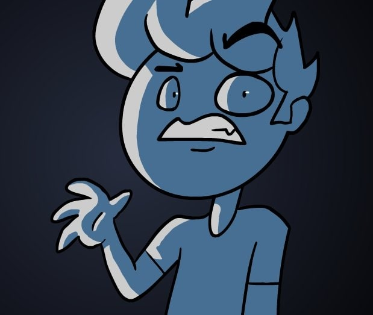
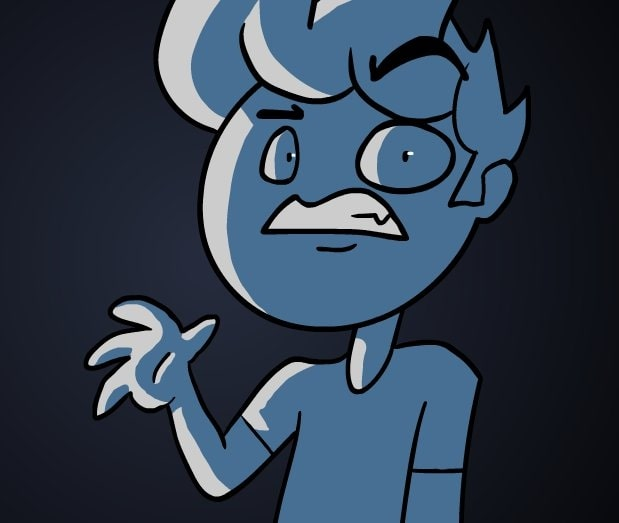

Lixian, de son vrai nom, Luis Costa, est un animateur, vidéaste, développeur de jeu vidéo et éditeur. Il est surtout connu pour être devenu l’éditeur vidéo d’un des plus grand Youtubeurs de la plateforme, Markiplier.
Comment je suis devenu monteur vidéo pour Markiplier?
En savoir plus >Comment j'ai créé ce jeu d'horreur sur Unreal Engine
En savoir plus >Mes débuts en tant qu'animateur
En savoir plus >

 
